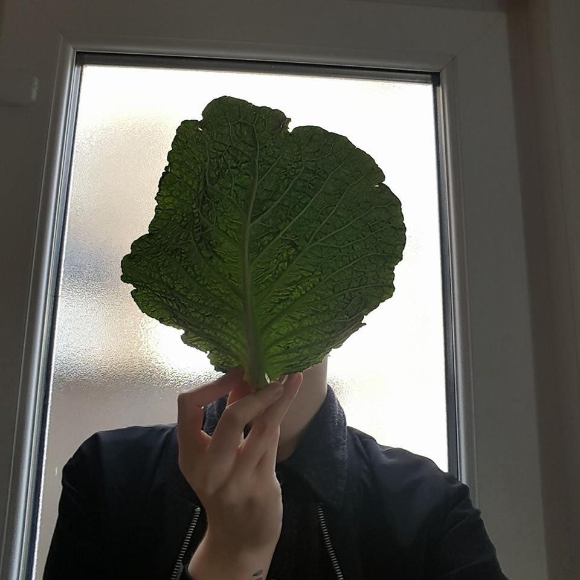

Nina Hanika
I'm a 26 year old Social History of Art student. I like to think about women, arts accessibility, and social justice.
art
My favourite artists are:
- Pipilotti Rist
- Alina Szapocznikow
- Njideka Akunyili Crosby
- Women's Strike
- Abortion Support Network
- Sisters Uncut
- blue slug
- purple slug
- green slug
feminism
Three groups I've been involved with are: